If you're a fan of Caesar III, you've surely noticed the care and attention to detail in the campaign maps — and the free-play ones too. The natural landscapes on which the player builds a “new Rome” look quite realistic (within the game): streams flow into rivers and lakes, rivers run across the whole map, “immortal” sheep wander the forests and occasionally stray onto meadows and get in the way of building farms, gulls circle over fishing spots, and now and then an unlucky sailor drifts down the river on the wreck of a ship. Rocky massifs are ringed with trees, and the ground is carpeted with lush green grass. This lovely picture has one drawback: the map size never exceeds 160×160 tiles. In this article I'll describe how I generated much larger maps.
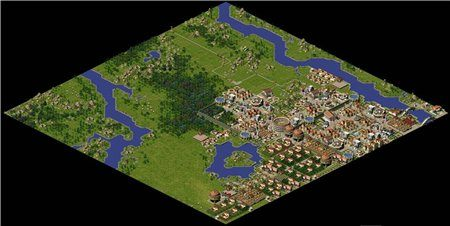
The original game doesn't support large maps, so all the experiments were done within CaesarIA (an open-source clone of Caesar III©). Large-map support was in the remake from the start, but until I read a good article about using the “diamond-square” method for building landscapes, loading any maps beyond those shipped with the game or made by fans wasn't possible. Once I understood the direction to take, I stumbled on another article about terrain generation that fully convinced me this method was viable for creating a map automatically.
The output of the base algorithm is an array of points with heights; mapping height to color gives a map like this.
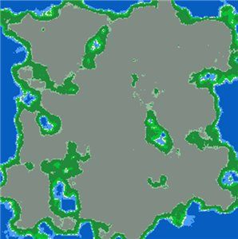
The colors mean: blue is deep water; lighter blue is water near the shore; yellow is the coastline; green is grass and flatlands; saturated green is forest; grey and dark grey are low and high mountains respectively.
Adapting the output to the game's terrain specifics required rethinking how some values and settings are interpreted, but overall the data is suitable for further processing. Now I can paint the values onto the city map; to start, I'll change only the water tiles and leave the rest unpainted.
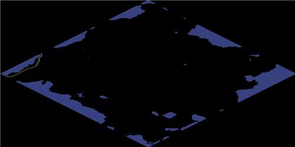
After filling the water tiles, I can fill in grass, forest and mountains. Now the generated map looks more like a normal one.
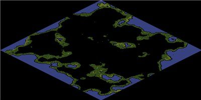
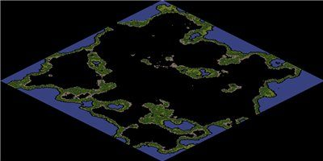
Most of the remaining map should, in theory, be covered with high mountains — but then it would be impassable for people, so instead of high mountains I again use flatland tiles. The generated map still has unfilled areas adjacent to water.
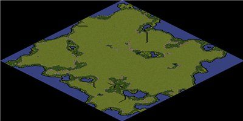
Filling those areas means accounting for the neighbours, to pick the right texture for each tile. The game has these coastline textures, oriented to the north:
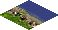
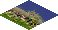
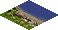
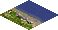
to the east:
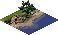
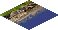
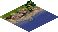
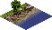
to the south:
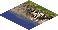
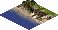
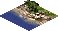
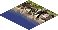
and to the west:
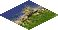
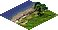
Such tiles are determined by the position of the water tiles relative to the tile being computed. For example, a north-facing coast tile can only have water tiles to the north, north-east and north-west, and their combinations. We do the same for the other coast tiles and leave the rest alone. The result is a coastline without corner tiles.
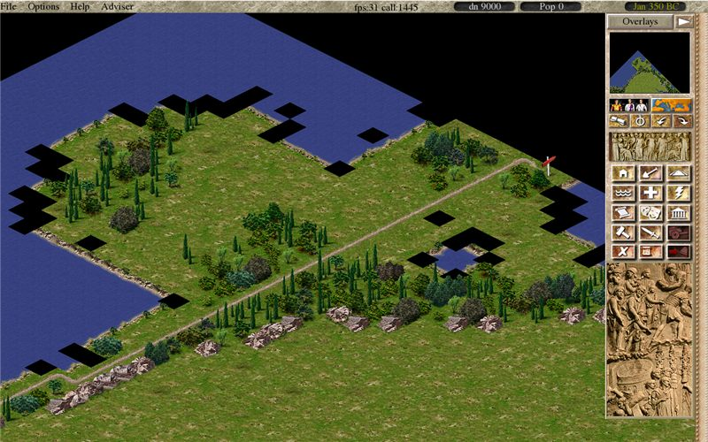
The next step is finding the corner tiles that were skipped in the previous step. Such tiles have triples of neighbours (water) in the directions north→north-east→east, east→south-east→south and so on. For the corners the game has these textures:
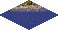
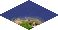
and placing them gives an almost-finished map.
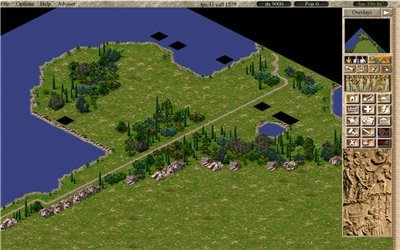
Now the only tiles left are the water and land tiles that weren't handled in the previous steps. Tiles surrounded by land on all sides are treated as land, those surrounded by water — as water. Coast tiles count as both water and land at once. What remains is to add a road, so settlers can arrive, and rivers to vary the overall landscape.
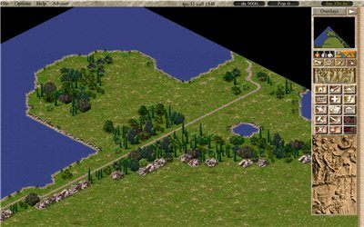
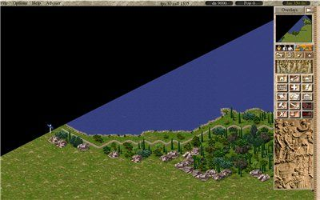
Generating a 500×500-tile map takes a little time — still noticeably more than loading a ready-made map. Below is a screenshot of a large map, 3800×1880 pixels. You can add various objects, settlements and even a city to such a map in single-player mode, but I think it's better suited to multiplayer. Another upside of the chosen algorithm is scalability: you can save the computation results and, if needed, reuse them to compute an adjacent territory.
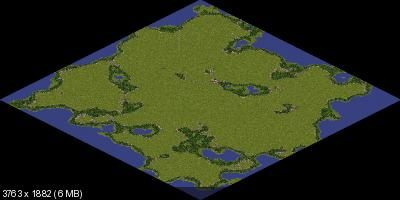
Of course, a generated map can't compare with a hand-made one, but being able to create maps automatically is one more step toward building a sequel and developing the ideas of the original game. You can also follow and contribute to the Caesar III remake on the project page; the map-generator source code is there too.
Bonus. Screenshots from the remake.
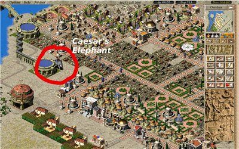
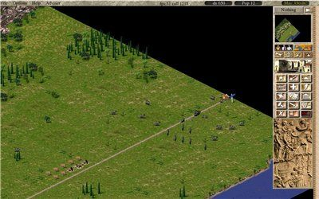
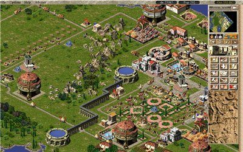
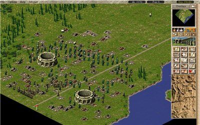
← All articles